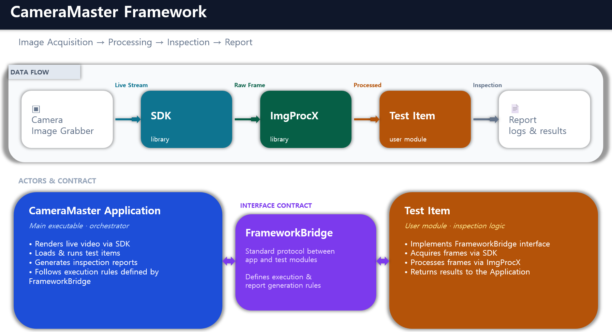

CameraMaster Framework

CameraMaster Application
- Main executable application for image acquisition and inspection
- Renders captured video streams in real-time
- Executes test items for automated image analysis and validation
- Generates inspection reports and logs based on test results
ImgProcX library
- High-performance image processing library
- Provides functions for image format conversion (e.g., demosaicing raw Bayer images)
- Optimized for parallel execution to enhance high-speed
- Utilizes GPU acceleration for high-speed processing of large image data
SDK library
- Provides a API for control of the image grabber
- Supports image sensor initialization, register configuration, and real-time image capture
FrameworkBridge library
- Core interface library for test item development
- Defines standardized communication protocols between the application and test modules
- Enables test item integration and lifecycle management within the main application
Test Item
- User-implementable inspection module based on ‘FrameworkBridge’
- Acquires image data from the grabber for custom analysis
- Performs algorithmic evaluation on captured frames (e.g., defect detection, measurement, etc.)
- Communicates inspection results back to the main application for display and report generation
class FRAMEWORKBRIDGECLASS CInspectionItem
{
friend class CInspectionItemImpl;
public:
CInspectionItem(LPCTSTR lpszName,
MIG::INSPECTION_TYPE type,
MIG::INSPECTION_METHOD method,
int nParaNo,
int nBoardId);
virtual ~CInspectionItem();
private:
CInspectionItemImpl* m_pInspectionItemImpl = nullptr;
protected:
virtual BOOL PreInitialize();
virtual BOOL PreInspect();
virtual void PostInspect();
virtual BOOL Inspect() = 0;
HWND SetOptionDialog(HWND hWnd);
HWND SetResultDialog(HWND hWnd);
void SetInspectionMethod(MIG::INSPECTION_METHOD method);
public:
BOOL InitTest();
BOOL PreTest();
void PostTest();
int Test();
BOOL Abort(BOOL bResult, ULONG ulTimeout = 1000); // do not call in item. it could be deadlock.
BOOL IsAbort() const;
BOOL IsTesting() const;
int GetParaNo(void) const;
void SetParaNo(int nIndexParaNo);
void SetName(LPCTSTR lpszName);
LPCTSTR GetName(void) const;
MIG::INSPECTION_TYPE GetInspectionType(void) const;
MIG::INSPECTION_METHOD GetInspectionMethod(void) const;
LPCSYSTEMTIME GetStartedTime() const;
void EnableInspection(BOOL bEnable = TRUE);
BOOL IsEnabled() const;
virtual BOOL SaveOptions();
virtual BOOL LoadOptions();
const HWND GetOptionDialog() const;
const HWND GetResultDialog() const;
int GetResultBinCode(void) const;
LPCTSTR GetResultBinCodeName(void) const;
void SetResultBinCode(int nBinCode, LPCTSTR lpszName);
int GetBoardId(void) const;
void SetLiveItemCaptureTimeout(DWORD dwTimeout_ms);
};